DL-深度学习入门-基于Python的理论与实现-7-卷积神经网络 目录
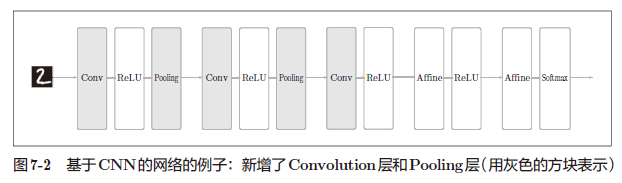
7.2 卷积层 7.2.1 全连接层存在的问题 全连接层存在的问题：数据的形状被“忽视”。
卷积神经网络可以保持形状不变。
卷积层的输入数据称为输入特征图（input feature map）
输出数据称为输出特征图（output feature map）
7.2.2 卷积运算
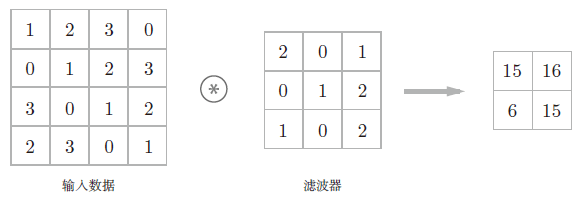
卷积层进行的处理就是卷积运算。卷积运算相当于图像处理中的“滤波器运算”。
将各个位置上滤波器的元素和输入的对应元素相乘，然后再求和（有时将这个计算称为乘积累加运算）。然后，将这个结果保存到输出的对应位置。将这个过程在所有位置都进行一遍，就可以得到卷积运算的输出。
7.2.3 填充
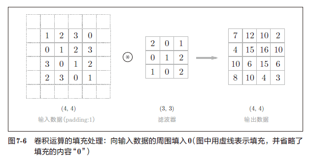
在卷积层的处理之前，向输入数据的周围填入固定的数据，称为填充（padding） 。
7.2.4 步幅
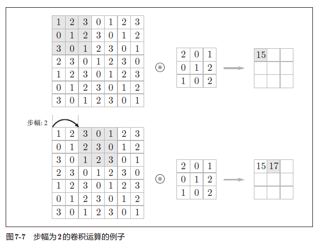
应用滤波器的位置间隔称为步幅（stride）
假设输入大小为 $(H,W)$，滤波器大小为 $(FH, FW)$，输出大小为 $(OH,OW)$，填充为 $P$，步幅为 $S$。
7.2.5 3维数据的卷积运算
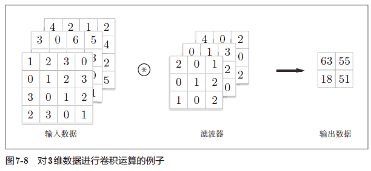
7.2.6 结合方块思考 将数据和滤波器结合长方体的方块来考虑，3 维数据的卷积运算会很容易理解。
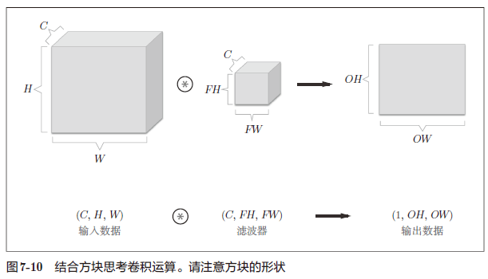
7.2.7 批处理 网络间传递的是 4 维数据，对这 N 个数据进行了卷积运算。也就是说，批处理将 N 次的处理汇总成了 1 次进行。
7.3 池化层
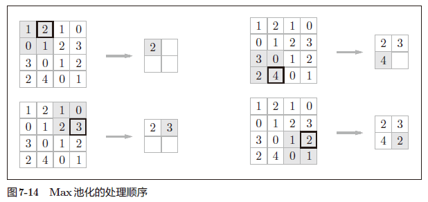
池化是缩小高、长方向上的空间的运算。
在图像识别领域，主要使用 Max 池化。
池化层的特征
没有要学习的参数
池化层和卷积层不同，没有要学习的参数。池化只是从目标区域中取最大值（或者平均值），所以不存在要学习的参数。
通道数不发生变化
经过池化运算，输入数据和输出数据的通道数不会发生变化。
对微小的位置变化具有鲁棒性（健壮）
输入数据发生微小偏差时，池化仍会返回相同的结果。因此，池化对输入数据的微小偏差具有鲁棒性。
7.4 卷积层和池化层的实现 7.4.1 4维数组 所谓4 维数据，比如数据的形状是(10, 1, 28, 28)，则它对应 10 个高为 28、长为 28、通道为 1 的数据。
x = np.random.rand(10 , 1 , 28 , 28 )
(10, 1, 28, 28)
访问第 1 个数据：
(1, 28, 28)
访问第1 个数据的第1 个通道的空间数据：
7.4.2 基于 im2col 的展开 如果老老实实地实现卷积运算，估计要重复好几层的for语句。这样的实现有点麻烦，而且，NumPy中存在使用for语句后处理变慢的缺点（NumPy中，访问元素时最好不要用for语句）。
im2col是一个函数，将输入数据展开以适合滤波器（权重）。对 3 维的输入数据应用im2col后，数据转换为 2 维矩阵（正确地讲，是把包含批数量的 4 维数据转换成了 2 维数据）。
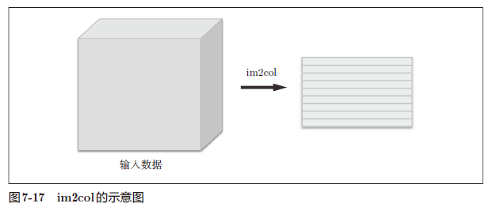
im2col 这个名称是“image to column”的缩写，翻译过来就是“从图像到矩阵”的意思。
7.4.3 卷积层的实现 im2col(input_data, filter_h, filter_w, stride=1, pad=0)
import sys, osfrom common.util import im2col1 , 3 , 7 , 7 )5 , 5 , stride=1 , pad=0 )print (col1.shape) 10 , 3 , 7 , 7 ) 5 , 5 , stride=1 , pad=0 )print (col2.shape)
(9, 75)
(90, 75)
使用 im2col 来实现卷积层：
class Convolution :def __init__ (self, W, b, stride=1 , pad=0 ):""" 将滤波器（权重）、偏置、步幅、填充作为参数接收。 滤波器是(FN, C, FH, FW) 的4 维形状。 另外，FN、C、FH、FW 分别是Filter Number（滤波器数量）、Channel、Filter Height、Filter Width 的缩写。 """ def forward (self, x ):int (1 + (H + 2 *self.pad - FH) / self.stride)int (1 + (W + 2 *self.pad - FW) / self.stride)1 ).T 1 ).transpose(0 , 3 , 1 , 2 ) return out
7.4.4 池化层的实现
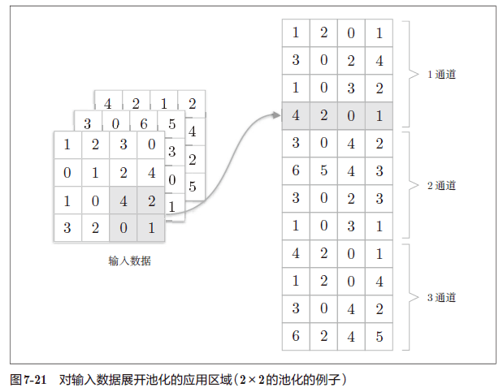
池化的应用区域按通道单独展开。
class Pooling :def __init__ (self, pool_h, pool_w, stride=1 , pad=0 ):def forward (self, x ):int (1 + (H - self.pool_h) / self.stride)int (1 + (W - self.pool_w) / self.stride)1 , self.pool_h*self.pool_w)max (col, axis=1 )0 , 3 , 1 , 2 )return out
池化层的实现按下面 3 个阶段：
展开输入数据。
求各行的最大值。
转换为合适的输出大小
7.5 CNN 的实现 class SimpleConvNet :"""简单的ConvNet conv - relu - pool - affine - relu - affine - softmax Parameters ---------- input_size : 输入大小（MNIST的情况下为784） hidden_size_list : 隐藏层的神经元数量的列表（e.g. [100, 100, 100]） output_size : 输出大小（MNIST的情况下为10） activation : 'relu' or 'sigmoid' weight_init_std : 指定权重的标准差（e.g. 0.01） 指定'relu'或'he'的情况下设定“He的初始值” 指定'sigmoid'或'xavier'的情况下设定“Xavier的初始值” """ def __init__ (self, input_dim=(1 , 28 , 28 conv_param={'filter_num' :30 , 'filter_size' :5 , 'pad' :0 , 'stride' :1 }, hidden_size=100 , output_size=10 , weight_init_std=0.01 ):'filter_num' ]'filter_size' ]'pad' ]'stride' ]1 ]2 *filter_pad) / filter_stride + 1 int (filter_num * (conv_output_size/2 ) * (conv_output_size/2 ))'W1' ] = weight_init_std * np.random.randn(filter_num, input_dim[0 ], filter_size, filter_size)'b1' ] = np.zeros(filter_num)'W2' ] = weight_init_std * np.random.randn(pool_output_size, hidden_size)'b2' ] = np.zeros(hidden_size)'W3' ] = weight_init_std * np.random.randn(hidden_size, output_size)'b3' ] = np.zeros(output_size)'Conv1' ] = Convolution(self.params['W1' ], self.params['b1' ],'stride' ], conv_param['pad' ])'Relu1' ] = Relu()'Pool1' ] = Pooling(pool_h=2 , pool_w=2 , stride=2 )'Affine1' ] = Affine(self.params['W2' ], self.params['b2' ])'Relu2' ] = Relu()'Affine2' ] = Affine(self.params['W3' ], self.params['b3' ])def predict (self, x ):for layer in self.layers.values():return xdef loss (self, x, t ):""" 求损失函数 参数x是输入数据、t是教师标签 """ return self.last_layer.forward(y, t)def accuracy (self, x, t, batch_size=100 ):if t.ndim != 1 : t = np.argmax(t, axis=1 )0.0 for i in range (int (x.shape[0 ] / batch_size)):1 )*batch_size]1 )*batch_size]1 )sum (y == tt) return acc / x.shape[0 ]def numerical_gradient (self, x, t ):"""求梯度（数值微分） Parameters ---------- x : 输入数据 t : 教师标签 Returns ------- 具有各层的梯度的字典变量 grads['W1']、grads['W2']、...是各层的权重 grads['b1']、grads['b2']、...是各层的偏置 """ lambda w: self.loss(x, t)for idx in (1 , 2 , 3 ):'W' + str (idx)] = numerical_gradient(loss_w, self.params['W' + str (idx)])'b' + str (idx)] = numerical_gradient(loss_w, self.params['b' + str (idx)])return gradsdef gradient (self, x, t ):"""求梯度（误差反向传播法） Parameters ---------- x : 输入数据 t : 教师标签 Returns ------- 具有各层的梯度的字典变量 grads['W1']、grads['W2']、...是各层的权重 grads['b1']、grads['b2']、...是各层的偏置 """ 1 list (self.layers.values())for layer in layers:'W1' ], grads['b1' ] = self.layers['Conv1' ].dW, self.layers['Conv1' ].db'W2' ], grads['b2' ] = self.layers['Affine1' ].dW, self.layers['Affine1' ].db'W3' ], grads['b3' ] = self.layers['Affine2' ].dW, self.layers['Affine2' ].dbreturn gradsdef save_params (self, file_name="params.pkl" ):for key, val in self.params.items():with open (file_name, 'wb' ) as f:def load_params (self, file_name="params.pkl" ):with open (file_name, 'rb' ) as f:for key, val in params.items():for i, key in enumerate (['Conv1' , 'Affine1' , 'Affine2' ]):'W' + str (i+1 )]'b' + str (i+1 )]
如果使用 MNIST 数据集训练 SimpleConvNet，则训练数据的识别率为 99.82%，测试数据的识别率为 98.96%（每次学习的识别精度都会发生一些误差）。测试数据的识别率大约为 99%，就小型网络来说，这是一个非常高的识别率。
7.7 具有代表性的 CNN
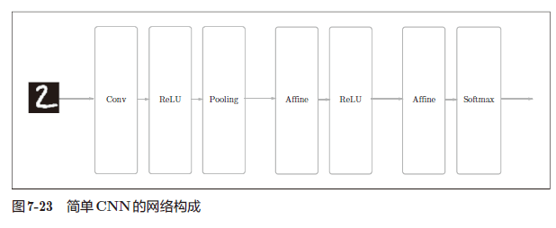
7.7.1 LeNet
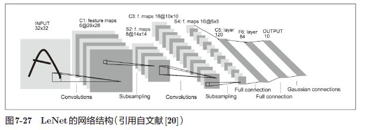
于 1998 年首次被提出。
7.7.2 AlexNet
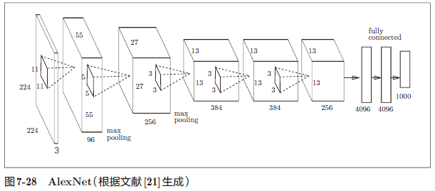
2012 年被提出，AlexNet 是引发深度学习热潮的导火线。
7.8 小结
CNN在此前的全连接层的网络中新增了卷积层和池化层。
使用im2col函数可以简单、高效地实现卷积层和池化层。
通过CNN的可视化，可知随着层次变深，提取的信息愈加高级。
LeNet和AlexNet是CNN的代表性网络。
在深度学习的发展中，大数据和GPU做出了很大的贡献。